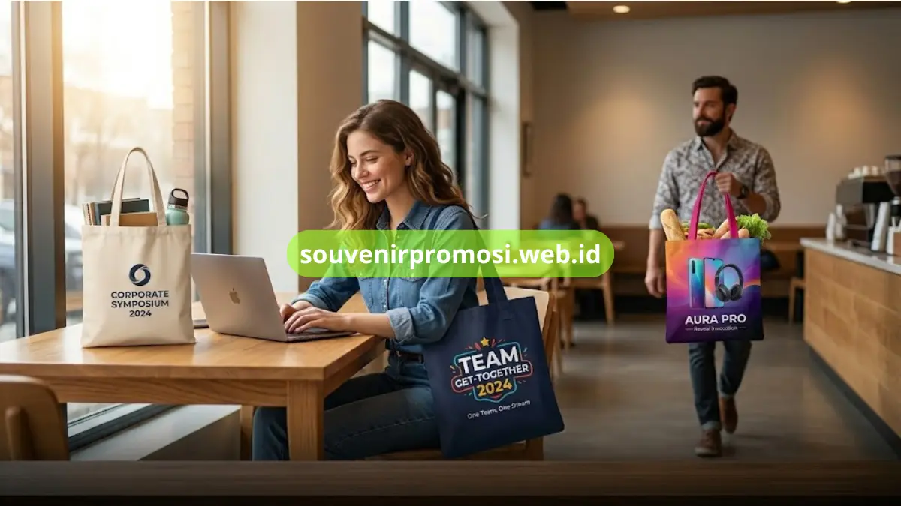

Poin Penting
- Tujuh varian totebag kanvas custom tersedia untuk berbagai kebutuhan souvenir promosi.
- Setiap varian memiliki karakteristik bahan dan teknik cetak yang berbeda.
- Semua varian dapat dipesan grosir dengan proses custom desain di souvenirpromosi.web.id.
- Pemilihan varian disesuaikan dengan tema acara, anggaran, dan jumlah penerima souvenir.
Daftar Isi
- Pendahuluan
- 1. Totebag Kanvas Natural Polos Tebal
- 2. Totebag Kanvas Kombinasi Warna
- 3. Totebag Kanvas Bordir Logo Premium
- 4. Totebag Kanvas Sablon Rubber Full Color
- 5. Totebag Kanvas DTF Custom Desain
- 6. Totebag Kanvas Furing dan Resleting
- 7. Totebag Kanvas Mini Custom
- Kenapa Memilih Souvenir Promosi
- Pesan Totebag Kanvas Custom Sekarang
- FAQ
Totebag kanvas custom untuk souvenir promosi adalah tas berbahan kanvas tebal yang dicetak dengan logo perusahaan untuk dibagikan sebagai merchandise korporat, souvenir seminar, atau corporate gift.
Souvenir Promosi menghadirkan tujuh varian totebag kanvas custom, mulai dari kanvas natural polos, kombinasi warna, bordir premium, hingga sablon DTF full color, yang seluruhnya bisa dipesan langsung melalui souvenirpromosi.web.id.
Ketujuh pilihan ini dirancang agar tim HR, marketing, dan purchasing dapat menyesuaikan souvenir dengan anggaran, tema acara, serta jumlah pemesanan mulai dari puluhan hingga ribuan pieces.
1. Totebag Kanvas Natural Polos Tebal untuk Souvenir Elegan Serbaguna
Totebag kanvas natural polos memakai bahan kanvas tebal berwarna krem atau putih gading yang memberi kesan bersih dan profesional. Varian ini paling banyak dipilih perusahaan karena warnanya netral sehingga logo apa pun akan tampil kontras dan mudah terbaca.
Souvenir Promosi menyediakan kanvas natural dengan ketebalan yang stabil sehingga tas tidak mudah melar meski dipakai membawa dokumen atau laptop, menjadikannya pilihan aman untuk souvenir lintas divisi.
2. Totebag Kanvas Kombinasi Warna untuk Branding Perusahaan yang Lebih Menonjol
Varian kombinasi warna menggabungkan dua warna kanvas pada badan tas dan tali, misalnya warna korporat perusahaan pada bagian tali atau list bawah tas. Kombinasi ini membuat identitas brand lebih kuat dibandingkan totebag satu warna polos, terutama saat dipakai berdampingan di area publik seperti bandara atau pusat konvensi.
Tim produksi Souvenir Promosi dapat menyesuaikan kombinasi warna dengan brand guideline perusahaan sebelum masuk tahap produksi massal.
3. Totebag Kanvas Bordir Logo Premium untuk Kesan Eksklusif Korporat
Totebag dengan bordir logo memberi tekstur timbul pada logo sehingga terlihat lebih mewah dibanding cetak datar. Teknik ini cocok untuk souvenir eksekutif, corporate gift akhir tahun, atau hadiah untuk klien VIP yang membutuhkan kesan lebih personal.
Souvenir Promosi mengerjakan bordir komputer presisi sehingga detail logo, termasuk teks kecil, tetap rapi dan konsisten pada setiap pieces.

4. Totebag Kanvas Sablon Rubber Full Color untuk Cetak Logo Tajam dan Detail
Sablon rubber menghasilkan warna solid, tahan gesek, dan cocok untuk logo dengan warna blok atau gradasi sederhana. Hasil cetak menempel kuat pada serat kanvas sehingga warna tidak mudah retak saat tas dicuci atau dilipat berulang kali.
Varian ini menjadi pilihan ekonomis untuk pemesanan grosir dengan satu hingga tiga warna logo.
5. Totebag Kanvas DTF Custom Desain untuk Cetak Multi Warna dengan Detail Tinggi
Teknik Direct to Film atau DTF memungkinkan pencetakan desain full color dengan gradasi, foto, atau ilustrasi kompleks tanpa batasan jumlah warna.
Souvenir Promosi menggunakan DTF untuk pesanan souvenir yang membutuhkan desain penuh warna, seperti campaign produk baru atau tema event tertentu. Hasil cetak tetap elastis mengikuti tekstur kanvas sehingga tidak mudah mengelupas dalam pemakaian sehari-hari.
6. Totebag Kanvas Furing dan Resleting untuk Kapasitas Ekstra Merchandise Korporat
Varian ini menambahkan lapisan furing di bagian dalam serta resleting pada bukaan tas, menjadikannya lebih fungsional untuk membawa laptop, dokumen, atau barang berharga lain.
Souvenir dengan fitur tambahan seperti ini biasanya digunakan sebagai corporate gift kelas atas atau goodie bag konferensi berskala nasional. Souvenir Promosi menyediakan pilihan saku dalam tambahan sesuai kebutuhan perusahaan.
7. Totebag Kanvas Mini Custom untuk Souvenir Ekonomis Seminar dan Event
Ukuran mini dengan bahan kanvas yang tetap tebal cocok untuk souvenir seminar, workshop, atau goodie bag dengan anggaran terbatas namun tetap ingin tampil premium. Ukurannya yang ringkas membuat biaya produksi dan pengiriman lebih efisien untuk pemesanan dalam jumlah besar.
Souvenir Promosi tetap menjaga kualitas jahitan dan hasil cetak meski pada ukuran yang lebih kecil.
Kenapa Memilih Souvenir Promosi untuk Totebag Kanvas Custom Perusahaan
Souvenir Promosi menangani produksi totebag kanvas custom dengan quality control ketat pada setiap batch, harga pabrik untuk pemesanan grosir, serta pengerjaan yang mengikuti linimasa acara perusahaan.
Setiap pesanan disertai mockup desain sebelum masuk produksi massal sehingga hasil akhir sesuai dengan brand guideline yang diberikan. Kombinasi ketujuh varian di atas dengan proses kerja yang transparan menjadikan souvenirpromosi.web.id pilihan yang tepat untuk kebutuhan souvenir promosi berskala kecil maupun besar.
Pesan Totebag Kanvas Custom Souvenir Promosi Sekarang di souvenirpromosi.web.id
Ketujuh varian totebag kanvas di atas tersedia untuk pemesanan custom desain melalui souvenirpromosi.web.id. Tim Souvenir Promosi menangani proses mulai dari konsultasi desain, pembuatan mockup, produksi massal, hingga pengiriman ke alamat perusahaan atau venue acara.
Hubungi tim Souvenir Promosi melalui website resmi untuk mendapatkan penawaran harga sesuai jumlah dan spesifikasi yang dibutuhkan perusahaan Anda.
Tujuh varian totebag kanvas custom di atas, mulai dari kanvas natural polos hingga totebag furing berresleting, memberi opsi lengkap bagi perusahaan yang ingin memberikan souvenir promosi berkualitas. Kunjungi souvenirpromosi.web.id untuk memilih varian yang sesuai dan memulai proses pemesanan grosir totebag kanvas custom perusahaan Anda.